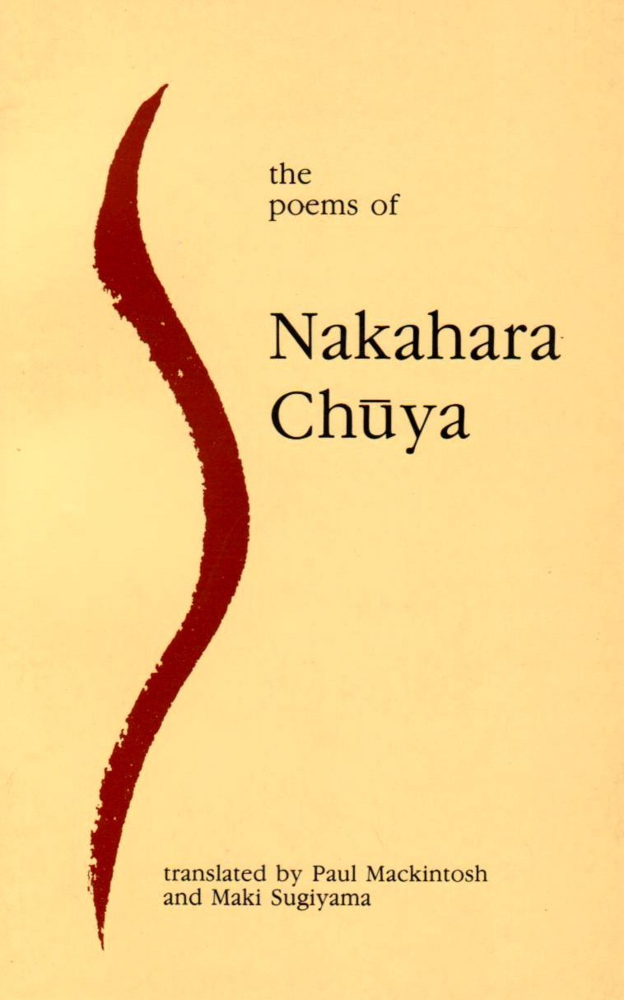
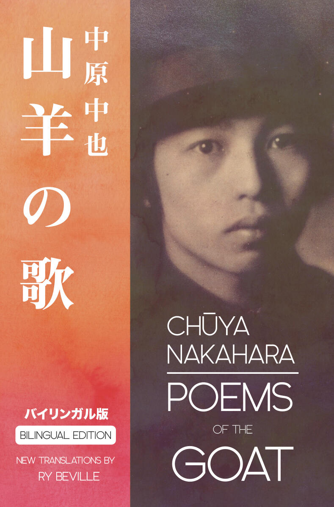
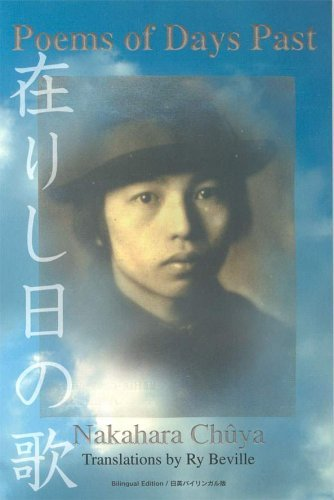

中原中也 (1907-1937)
Chuya Nakahara foi um dos poetas mais importantes da era Showa no Japão. Influenciado pelo simbolismo francês, ele criou um estilo único que mistura sensibilidades orientais e ocidentais.
Sua poesia é conhecida pela musicalidade e profundidade emocional, explorando temas como melancolia, amor e a beleza passageira da vida.

中原中也詩集 (1934)
Coletânea de poesias líricas com forte carga emocional.

山羊の歌 (1934)
Versos sobre amor, perda e solidão.

在りし日の歌 (1983)
Poemas sobre solidão e memórias do passado.
Na primavera, o sol nasce tarde
E o céu é tingido de tons suaves.
Meu coração, como uma flor caída,
Flutua na brisa da melancolia.
- Songs of a Goat
Mesmo com uma vida curta, Nakahara influenciou profundamente a poesia japonesa moderna. Seu estilo continua sendo estudado e admirado até hoje.